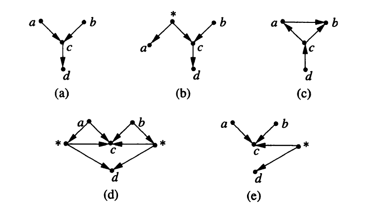
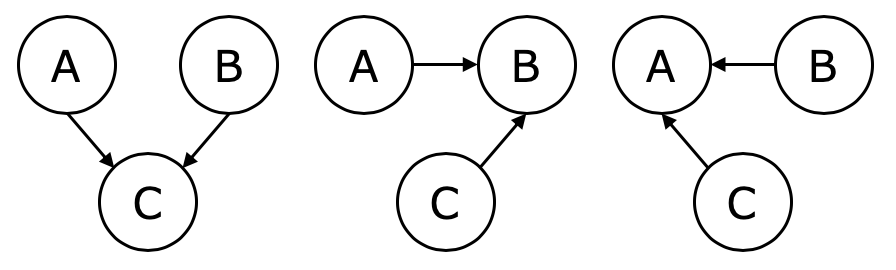
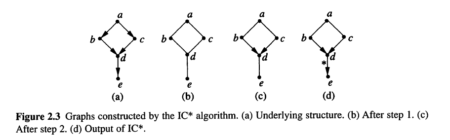
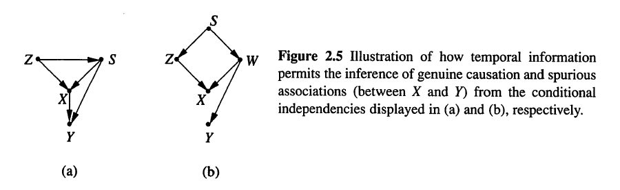

観察された結果から因果関係を知りたい
しかし、統計学では共変動に基づいて解析が行われている(not 因果関係)
因果の定義の必要条件
非巡回有向グラフ(DAG)と変数集合\(V\)が与えられている。 グラフ上の頂点がそれぞれ\(V\)の異なる要素に対応し、 矢線のそれぞれが対応する変数間の直接的な関数関係を表す時、 このグラフを変数集合\(V\)の因果構造という。
因果構造\(D\)と、\(D\)と整合するパラメータ集合\(\Theta_D\)の組 \(M=\langle D, \Theta_D \rangle\) を因果モデルという。
変数集合\(V\)の因果構造\(D\)と、観測変数集合\(O \subseteq V\)の組を潜在構造という。 潜在構造\(L = \langle D, O \rangle\)と\(L' = \langle D', O \rangle\)に対して、因果構造\(D'\)が観測変数集合\(O\)の因果構造\(D\)を表現できるとき、 \(L\)は\(L'\)よりも優位であるといい、\(L \preceq L'\)と記す
| \(L_1\) | \(L_2\) | |
|---|---|---|
| パラメータ | 多 | 少 |
| 表現できる分布 | 小 | 多 |
| 優位かどうか | 優位 | 劣位 |
分布\(\hat P\)が与えられた時、\(\hat P\)と一致する極小的潜在構造の全てにおいて、 変数\(C\)から変数\(E\)への有向道が存在する時、\(C\)は\(E\)に対して因果的な影響を与えるという。
変数\(\{ a,b,c,d \}\)の観察データから


\(I(P)\)を\(P\)に含まれるすべての条件付き独立関係の集合とする。
\(P(\langle D, \Theta_D \rangle)\)が\(I(P)\)以外の独立関係を含まない時、 因果モデル\(M= \langle D, \Theta_D \rangle\)は定常分布を生成する \(I(P( \langle D, \Theta_D \rangle)) \subseteq I(P( \langle D, \Theta'_D \rangle))\)
\(V\)から任意の変数組\((a,b)\)を取り出し、\(a \mathop{\,\perp\!\!\!\!\!\perp\,}b|S_{ab}\)となる集合\(S_{ab}\)を探索する。 このような\(S_{ab}\)が見つからない場合、\(a\)と\(b\)を無向辺で結び、無向グラフを構築する
\(S_{ab}\)が存在する時、互いに隣接しない\(a\)と\(b\)が共通の隣接点として\(c\)を保つ場合、\(c\in S_{ab}\)であるかどうかを調べる
次の規則に従って、ステップ2で得られた部分的有向グラフの無向辺にできるだけ多く矢印を加える
ステップ3はいくつかの規則により構成されている
潜在構造\(L_{[o]} = \langle D_{[O]}, O \rangle\)が次の2つの条件を満たす時、\(L_{[o]}\)は潜在構造\(L\)の射影であるという

次の条件を満たす時、\(X\)は\(Y\)に対して潜在的で因果的な影響を与えるという
次のいずれかの条件を満たす時、\(X\)は\(Y\)に対して本質的で因果的な影響を与えるという
\(R\)を集合\(A\)上の二項関係とする (\(R \subset A \times A\))
\(R\)が推移的(transitive) \[ \forall x ,\forall y, \forall z ((xRy \wedge yRz) \Rightarrow xRz) \]
閉包とは、「何らかの性質に関して閉じたもの」という意味
\(p\)を関係に関する性質とする
関係\(R\)の\(p\)に関する閉包とは、\(R\)を含み\(p\)の性質を満たす最小の関係
詳細はこちら
2つの変数\(X\)と\(Y\)がある背景において従属しているとする。 次の条件を満たす変数\(Z_1\)と\(Z_2\)と2つの背景が存在する時、\(X\)と\(Y\)は疑似相関を持つという
\(X\)に先行する\(S\)と\(Z\)が次の条件を満たす時、\(X\)は\(Y\)に対して因果的な影響を与える
\(X\)が\(Y\)に先行し、\(X\)と\(Y\)が背景\(S\)において従属しているとする。 \(Z\)が次の条件を満たす時、\(X\)と\(Y\)は疑似相関を持つという

経験分布\(P\)に対して、\(P\)と一致する極小因果構造の少なくとも1つと矛盾しない変数順序を\(P\)の統計的時間という
\[ X_t = \alpha X_{t-1} + \beta Y_{t-1} + \xi_t \\ Y_t = \gamma X_{t-1} + \delta Y_{t-1} + \eta_t \]
\[\begin{align} \begin{pmatrix} X'_t \\ Y'_t \end{pmatrix} &= \begin{pmatrix} a & b \\ c & d \end{pmatrix} \begin{pmatrix} X_t \\ Y_t \end{pmatrix} \\ &= \begin{pmatrix} a & b \\ c & d \end{pmatrix} \begin{pmatrix} \alpha & \beta \\ \gamma & \delta \end{pmatrix} \begin{pmatrix} X_{t-1} \\ Y_{t-1} \end{pmatrix} \\ &= \begin{pmatrix} \theta_1 & \theta_2 \\ \theta_3 & \theta_4 \end{pmatrix} \begin{pmatrix} X_{t-1} \\ Y_{t-1} \end{pmatrix} \\ \begin{pmatrix} X'_{t+1} \\ Y'_{t+1} \end{pmatrix} &= \begin{pmatrix} \theta_1 & \theta_2 \\ \theta_3 & \theta_4 \end{pmatrix} \begin{pmatrix} X_{t} \\ Y_{t} \end{pmatrix} \end{align}\]
\[\begin{align} \begin{pmatrix} \theta_1 & \theta_2 \\ \theta_3 & \theta_4 \end{pmatrix}^{-1} \begin{pmatrix} X'_{t+1} \\ Y'_{t+1} \end{pmatrix} = \begin{pmatrix} X_{t} \\ Y_{t} \end{pmatrix} \end{align}\]